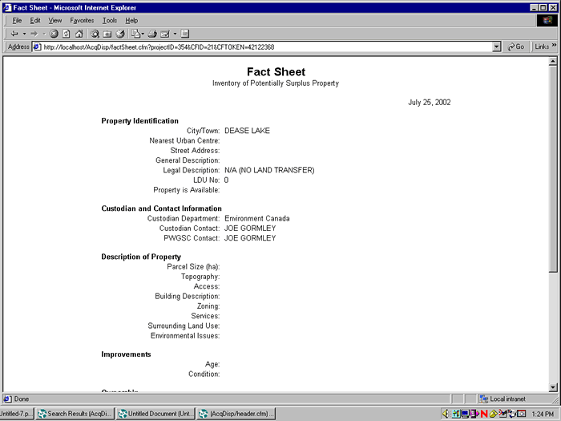

|
Directory Structure and File Descriptions
NPS/ (Main directory)
Return to Index | Top of Interface
Notation for the "QueryString Parameters and Form Fields" lists below:
x, y - both x and y are included
x | y - either x or y is included
[x] - parameter(s) is optional
x("X") - parameter x has value X
Example:
URL.projectID, URL.view, [Form.appraisalAdd | Form.appraisalUpdate]
Reads:
URL.projectID and URL.view are both passed and either Form.appraisalAdd
or Form.appraisalUpdate may be passed.
Note: Only parameters and fields on which critical decisions are based
are listed.
acquisitions.cfm
acquisitions.cfm displays the project information for acquisition projects.
When the user clicks on the "Details" button of an acquisition
project from the Search Results, acquisition.cfm is called. It reads the
Project ID from the querystring to determine which project should be displayed
and then retrieves the data from tblAcquisitions
and tblProjects and fills in the
fields with this data. acquisitions.cfm can be requested from many other
files and depending on the parameters passed to it, it may perform various
update and append queries. When acquisitions.cfm is requested by projectList.cfm
or newProject.cfm it saves all of it's data in Session variables so that
if the user clicks "Cancel" projectList.cfm can restore all
the data to it's original state.
Files that can request acquisitions.cfm:
Files that acquisitions.cfm can request:
| File |
QueryString Parameters and Form Fields |
| acquisitionSave.cfm |
Form.page("projectList.cfm") |
Form.page("addPINPID.cfm?type=acquisitions&projectID=n")
|
Form.page("acquisitions.cfm?projectID=n&pinpidDelete=n&view=property")
|
Form.page("appraisalUpdate.cfm?type=acquisitions&projectID=n&add=yes")
|
Form.page("appraisalUpdate.cfm?type=acquisitions&projectID=n&appraisalID=n")
|
Form.page("acquisitions.cfm?projectID=n&appraisalDelete=n&view=purchase")
|
Form.page("statusUpdate.cfm?type=acquisitions&projectID=n&add=yes")
|
Form.page("statusUpdate.cfm?type=acquisitions&projectID=n&statusID=n")
|
Form.page("acquisitions.cfm?projectID=n&statusDelete=n&view=status")
|
Form.page("statusPrint.cfm?projectID=n") |
Form.page("acquisitionSummary.cfm?projectID=n") |
| projectList.cfm |
URL.cancelType("acquisition") |
| acquisitionSummary.cfm |
URL.projectID |
| statusPrint.cfm |
URL.projectID |
| calendar.cfm |
URL.tab, URL.form, URL.field |
Return to Index | Top of File Descriptions
acquisitionSave.cfm
Whenever a user leaves acquisitions.cfm
(with the exception of clicking "Cancel" or "Admin")
all of the data that is currently in the forms on acquisitons.cfm is sent
to acquisitionSave.cfm, where it is saved to the database (tblAcquisitions
and tblProjects). acquisitionSave.cfm
then sends the user to the appropriate page, as specified in Form.page.
Files that can request acquisitionSave.cfm:
Files that acquisitionSave.cfm can request:
acquisitionSave.cfm can request any page that is passed to it (as a string)
through Form.page. See acquisitions.cfm
for a list of strings that can be passed to acquisitionSave.cfm.
Return to Index | Top of File Descriptions
acquisitionSummary.cfm
When the user wants to print the Summary of Property Acquisition (SPA),
they are first taken to acquisitionSummary.cfm where they can use the
form to edit the data that will actually be displayed. If the user has
not yet clicked on "Print Preview" for this project then, when
acquisitionSummary.cfm loads, the form will be filled with data from tblAcquisitions
and tblProjects. The when the user
clicks on "Print Preview" the data in the form will be saved
to tblAcqSummary. From that point
forward, when the user goes to acquisitionSummary.cfm, the form will be
filled with data from tblAcqSummary instead of tblAcquisitions and tblProjects.
If the user is logged in, then clicking on "Acquisition Summary"
on the "Print" menu from acquisitions.cfm
will request acquisitionSave.cfm
which, in turn, will request acquisitionSummary.cfm. If the user is not
logged in, they will be taken directly to acquisitionSummary.cfm to avoid
saving changes they may have made.
Files that can request acquisitionSummary.cfm:
Files that acquisitionSummary.cfm can request:
Return to Index | Top of File Descriptions
acquisitionSummaryPrint.cfm
acquisitionSummaryPrint.cfm displays data from tblAcqSummary,
formatted as a Summary of Property Acquisition report.
Files that can request acquisitionSummaryPrint.cfm:
Files that acquisitionSummaryPrint.cfm can request:
acquisitionSummaryPrint.cfm cannot request any pages, users must use
the back button on their browser to return to acquisitionSummary.cfm
Return to Index | Top of File Descriptions
addOptions.cfm
When a user is adding a new project they have the option of adding new
locations, client/departments and client contacts. When they click on
a button to add one of these options, the form on newProject.cfm
is sent to addOptions.cfm, where the values are entered into hidden form
fields. Then when the user has filled out the form on addOptions.cfm,
it (along with the hidden form fields) is sent back to newProject.cfm
so that no data is lost.
When the user clicks on one of the "Add Option" buttons on
newProject.cfm, the option type is passed to addOptions.cfm in Form.optionType.
addOptions.cfm displays the appropriate form depending on the value in
Form.optionType.
Files that can request addOptions.cfm:
| File |
QueryString Parameters and Form Fields |
| newProject.cfm |
Form.optionType |
Files that addOptions.cfm can request:
| File |
QueryString Parameters and Form Fields |
| newProject.cfm |
Form.optionType("location") | Form.optionType("dept")
|
Form.optionType("clientContact") | Form.optionType("cancel") |
Return to Index | Top of File Descriptions
addPINPID.cfm
Acquisition and disposal projects can both have many PIN/PID's. When
they click on the "Add New" PIN/PID button on either acquisitions.cfm
or disposals.cfm, they are taken
to addPINPID.cfm (via acquisitionSave.cfm or disposalSave.cfm) where they
fill out a simple form and click either "Submit" or "Cancel".
The form is sent to the page specified in URL.type (either acquisitions.cfm
or dipsosals.cfm).
Files that can request addPINPID.cfm:
Files that addPINPID.cfm can request:
| File |
QueryString Parameters and Form Fields |
| acquisitions.cfm |
URL.projectID, URL.view("property"), [Form.pinpidAdd] |
| disposals.cfm |
URL.projectID, URL.view("property"), [Form.pinpidAdd] |
Return to Index | Top of File Descriptions
addRemark.cfm
addRemark.cfm is called when a user clicks on "Add New Remark" on disposals.cfm
in order to add a First Nations consultation remark. Remarks can only
be added for bands that have already been added to the project. Unlike
status updates and appraisals, First Nations consultation remarks cannot
be edited once made.
Files that can request addRemark.cfm:
| File |
QueryString Parameters and Form Fields |
| disposalSave.cfm |
URL.projectID, URL.bandID |
Files that addRemark.cfm can request:
| File |
QueryString Parameters and Form Fields |
| disposals.cfm |
URL.projectID, URL.view("firstNations"), [Form.remarkAdd] |
Return to Index | Top of File Descriptions
application.cfm
application.cfm is automatically called every time a page is loaded.
It is used for declaring variables with default values as well as turning
on ClientManagement, ClientCookies, and SessionManagement.
Return to Index | Top of File Descriptions
appraisalUpdate.cfm
appraisalUpdate.cfm is called when the user clicks on the "Add New"
or "Edit" buttons located in the Appraisal Info section on acquisitions.cfm.
It checks the querystring parameters to see if the user is adding or editing
an Appraisal. When the user fills out the form they can click "Submit"
or "Cancel" to return to acquisitions.cfm where a query will
add a new appraisal or edit an existing one.
Files that can request appraisalUpdate.cfm:
| File |
QueryString Parameters and Form Fields |
| acquisitionSave.cfm |
URL.projectID, URL.add | URL.appraisalID, URL.type |
Files that appraisalUpdate.cfm can request:
| File |
QueryString Parameters and Form Fields |
| acquisitions.cfm |
URL.projectID, URL.view(purchase), [Form.appraisalAdd | Form.appraisalUpdate] |
| calendar.cfm |
URL.form, URL.field |
Return to Index | Top of File Descriptions
bandUpdate.cfm
bandUpdate.cfm is called by disposalSave.cfm
via disposals.cfm when a user clicks
on "Add New Band" or "Edit Band Info". If the user
is editing a band, the form on bandUpdate.cfm will be filled with data
from tblBand. Otherwise, the form will be blank. When the user is done
they can click "Submit" or "Cancel" to return to disposals.cfm.
Files that can request bandUpdate.cfm:
| File |
QueryString Parameters and Form Fields |
| disposalSave.cfm |
URL.projectID, URL.bandID | URL.add |
Files that bandUpdate.cfm can request:
| File |
QueryString Parameters and Form Fields |
| disposals.cfm |
URL.projectID, URL.view("firstNations"), [Form.bandAdd
| Form.bandUpdate] |
Return to Index | Top of File Descriptions
calendar.cfm
calendar.cfm is called in a pop-up window, and allows the user to click
on a date and have that date entered into a form field. The hyperlinks
that request calendar.cfm pass it querystring parameters that tell it
which field to put the date into. Today's date shows up in orange and
when the mouse hovers over a day it changes to blue.
Files that can request calendar..cfm:
Files that calendar.cfm can request:
| File |
QueryString Parameters and Form Fields |
| calendar.cfm |
[URL.tab], URL.form, URL.field, URL.date |
Return to Index | Top of File Descriptions
consulting.cfm
consulting.cfm displays the project information for consulting projects.
When the user clicks on the "Details" button of a consulting
project from the Search Results, consulting.cfm is called. It reads the
Project ID from the querystring to determine which project should be displayed
and then retrieves the data from tblConsulting
and tblProjects and fills in the
fields with this data. Depending on the parameters passed to it, consulting.cfm
may perform update or append queries as well. When consulting.cfm is requested
by projectList.cfm or newProject.cfm it saves all of it's data in Session
variables so that if the user clicks "Cancel" projectList.cfm
can restore all the data to it's original state.
Files that can request consulting.cfm:
Files that consulting.cfm can request:
| File |
QueryString Parameters and Form Fields |
| consultingSave.cfm |
Form.page("projectList.cfm") |
Form.page("statusUpdate.cfm?type=consulting&projectID=n&add=yes")
|
Form.page("statusUpdate.cfm?type=consulting&projectID=n&statusID=n")
|
Form.page("consulting.cfm?projectID=n&statusDelete=n&view=status")
|
Form.page("statusPrint.cfm?projectID=n")
|
| projectList.cfm |
URL.cancelType("consulting") |
| calendar.cfm |
URL.tab, URL.form, URL.field |
Return to Index | Top of File Descriptions
consultingSave.cfm
Whenever a user leaves consulting.cfm
(with the exception of clicking "Cancel" or "Admin")
all of the data that is currently in the forms on consulting.cfm is sent
to consultingSave.cfm, where it is saved to the database (tblProjects).
consultingSave.cfm then sends the user to the appropriate page, as specified
in Form.page.
Files that can request consultingSave.cfm:
Files that consultingSave.cfm can request:
consultingSave.cfm can request any page that is passed to it (as a string)
through Form.page. See consulting.cfm
for a list of strings that can be passed to consultingSave.cfm.
Return to Index | Top of File Descriptions
disposals.cfm
disposals.cfm displays the project information for disposal projects.
When the user clicks on the "Details" button of a disposal project
from the Search Results, disposals.cfm is called. It reads the Project
ID from the querystring to determine which project should be displayed
and then retrieves the data from tblDisposals
and tblProjects and fills in the
fields with this data. disposals.cfm can be requested from many other
files and depending on the parameters passed to it, it may perform various
update and append queries. When disposals.cfm is requested by projectList.cfm
or newProject.cfm it saves all of it's data in Session variables so that
if the user clicks "Cancel" projectList.cfm can restore all
the data to it's original state.
Files that can request disposals.cfm:
| File |
QueryString Parameters and Form Fields |
| disposalSave.cfm |
URL.projectID, URL.pinpidDelete | URL.statusDelete |
| projectList.cfm |
URL.projectID, URL.backup |
| newProjectQuery.cfm |
URL.projectID, URL.backup |
| disposalSummary.cfm |
URL.projectID |
| addPINPID.cfm |
URL.projectID, URL.view, [Form.pinpidAdd] |
| statusUpdate.cfm |
URL.projectID, URL.view, [Form.statusAdd | Form.statusUpdate] |
| addRemark.cfm |
URL.projectID, URL.view, [Form.remarkAdd] |
| bandUpdate.cfm |
URL.projectID, URL.view, [Form.bandAdd | Form.bandUpdate] |
Files that disposals.cfm can request:
| File |
QueryString Parameters and Form Fields |
| disposalSave.cfm |
Form.page("projectList.cfm") |
Form.page("addPINPID.cfm?type=disposals&projectID=n")
|
Form.page("disposals.cfm?projectID=n&pinpidDelete=n&view=property")
|
Form.page("statusUpdate.cfm?type=disposals&projectID=n&add=yes")
|
Form.page("statusUpdate.cfm?type=disposals&projectID=n&statusID=n")
|
Form.page("disposals.cfm?projectID=n&statusDelete=n&view=status")
|
Form.page("bandUpdate.cfm?projectID=n&bandID=n")
|
Form.page("bandUpdate.cfm?projectID=n&add=yes")
|
Form.page("addRemark.cfm?projectID=n&bandID=n")
|
Form.page("statusPrint.cfm?projectID=n") |
Form.page("factSheet.cfm?projectID=n") |
Form.page("firstNationsPrint.cfm?projectID=n") |
Form.page("disposalSummary.cfm?projectID=n") |
| projectList.cfm |
URL.cancelType("disposal") |
| disposalSummary.cfm |
URL.projectID |
| firstNationsPrint.cfm |
URL.projectID |
| factSheet.cfm |
URL.projectID |
| statusPrint.cfm |
URL.projectID |
| calendar.cfm |
URL.tab, URL.form, URL.field |
Return to Index | Top of File Descriptions
disposalSave.cfm
Whenever a logged-in user leaves disposals.cfm
(with the exception of clicking "Cancel" or "Admin")
all of the data that is currently in the forms on disposals.cfm is sent
to disposalSave.cfm, where it is saved to the database (tblDisposals
and tblProjects). disposalSave.cfm
then sends the user to the appropriate page, as specified in Form.page.
If the user is not logged in, they are sent directly to the page they
requested.
Files that can request disposalSave.cfm:
| File |
QueryString Parameters and Form Fields |
| disposals.cfm |
Form.page |
Files that disposalSave.cfm can request:
disposalSave.cfm can request any page that is passed to it (as a string)
through Form.page. See disposals.cfm
for a list of strings that can be passed to disposalSave.cfm.
Return to Index | Top of File Descriptions
disposalSummary.cfm
When the user wants to print the Summary of Property Disposal , they
are first taken to disposalSummary.cfm where they can use the form to
edit the data that will actually be displayed. If the user has not yet
clicked on "Print Preview" for this project then, when disposalSummary.cfm
loads, the form will be filled with data from tblDisposals
and tblProjects. Then when the
user clicks on "Print Preview" the data in the form will be
saved to tblDispSummary. From
that point forward, when the user goes to disposalSummary.cfm, the form
will be filled with data from tblDispSummary instead of tblDisposals and
tblProjects.
If the user is logged in, then clicking on "Disposal Summary"
on the "Print" menu from disposals.cfm
will request disposalSave.cfm
which, in turn, will request disposalSummary.cfm. If the user is not logged
in, they will be taken directly to disposalSummary.cfm to avoid saving
changes they may have made.
Files that can request disposalSummary.cfm:
Files that disposalSummary.cfm can request:
Return to Index | Top of File Descriptions
disposalSummaryPrint.cfm

disposalSummaryPrint.cfm displays data from tblDispSummary,
formatted as a Summary of Property Disposal report.
Files that can request disposalSummaryPrint.cfm:
Files that disposalSummaryPrint.cfm can request:
disposalSummaryPrint.cfm cannot request any pages, users must use the
back button on their browser to return to disposalSummary.cfm
Return to Index | Top of File Descriptions
errorCurrency.cfm
errorCurrency.cfm is displayed when a user enters data in a currency
form field that cannot be converted into a currency. The error message
contains the field's name and the data that the user entered (both are
passed using QueryString parameters).
Files that can request errorCurrency.cfm:
Files that errorCurrency.cfm can request:
errorCurrency.cfm cannot request any pages, users must use the
back button on their browser to return to the page where they
entered the invalid data.
Return to Index | Top of File Descriptions
errorPINPID.cfm
errorPINPID.cfm is included in acquisitions.cfm and disposals.cfm when
a user attempts to add a PIN/PID that already exists. PIN/PID's must be
unique. After errorPINPID.cfm is included, all other processing is aborted.
Files that can request errorPINPID.cfm:
Files that errorPINPID.cfm can request:
errorPINPID.cfm cannot request any pages, users must use the back button
on their browser to return to addPINPID.cfm.
Return to Index | Top of File Descriptions
factSheet.cfm

factSheet.cfm displays the data from tblFactSheet (as well as a couple
of other tables) in a printable format. If the user is logged in, then
clicking on "Fact Sheet" on the "Print" menu from
disposals.cfm will request disposalSave.cfm
which, in turn, will request factSheet.cfm. If the user is not logged
in, they will be taken directly to factSheet.cfm to avoid saving changes
they may have made to the project.
Files that can request factSheet.cfm:
Files that factSheet.cfm can request:
factSheet.cfm cannot request any pages, users must use the back button
on their browser to return to disposals.cfm.
Note that, because disposalSave.cfm
does not send any information to the browser, the back button does not
return the user to it.
Return to Index | Top of File Descriptions
firstNationsPrint.cfm
firstNationsPrint.cfm displays the First Nations consultation data in
a printable format. If the user is logged in, then clicking on "First
Nations Consultations" on the "Print" menu from disposals.cfm
will request disposalSave.cfm
which, in turn, will request firstNationsPrint.cfm. If the user is not
logged in, they will be taken directly to firstNationsPrint.cfm to avoid
saving changes they may have made.
Files that can request firstNationsPrint.cfm:
Files that firstNationsPrint.cfm can request:
firstNationsPrint.cfm cannot request any pages, users must use the back
button on their browser to return to disposals.cfm.
Note that, because disposalSave.cfm
does not send any information to the browser, the back button does not
return the user to it.
Return to Index | Top of File Descriptions
generalReport.cfm
generalReport.cfm produces a report formatted for printing from the browser.
It displays whatever projects were found and listed on the Search
Results page. These projects are sorted based on user input on generalReportCreate.cfm.
User input on generalReportCreate.cfm also indicates whether SSA Amount
and Expenditures to Date information will be displayed in the report.
Files that can request generalReport.cfm:
Files that generalReport.cfm can request:
generalReport.cfm cannot request any pages, users must use the
back button on their browser to return to generalReportCreate.cfm
Return to Index | Top of File Descriptions
generalReportCreate.cfm
generalReportCreate.cfm is used to let the user choose the sort for the
General Report, as well as indicate whether or not SSA Amount and Expenditures
to Date information should be included in the report. When the user is
done they can click "Submit" to view the formatted General Report
and print it, or they can click "Cancel" to return to the Search
Results.
Files that can request generalReportCreate.cfm:
Files that generalReportCreate.cfm can request:
Return to Index | Top of File Descriptions
header.cfm
header.cfm is included at the top of most pages in the system. It provides
drop down menus for navigation as well as declares JavaScript functions,
CSS, and browser detection. The availability of menus and their contents
change according to the current page being displayed and according to
whether the user is logged in or not.
Because header.cfm is an include file, it does not specifcally request
any files, nor is it requested by any.
Return to Index | Top of File Descriptions
help.html
Files that can request help.html:
Any file that has header.cfm included in it can request help.html
Files that help.html can request:
help.html does not request any files exept itself when the user clicks
on a hyperlink to an anchor.
Return to Index | Top of File Descriptions
index.cfm
index.cfm is the default page for the main directory. It simply redirects
the browser to projectSearch.cfm.
Return to Index | Top of File Descriptions
login.cfm
When the user fills out the form and clicks submit, the form is sent
to projectSearch.cfm along with the hidden field, Form.LoggingOn. This
tells projectSearch.cfm to attempt to log in the user. If the user information
is correct, the appropriate client variables are set to log in the user,
otherwise projectSearch.cfm requests login.cfm?failed=yes and the process
is repeated.
Files that can request login.cfm:
Every file that has header.cfm included in it can request login.cfm as
long as they are not logged in already.
Files that login.cfm can request:
| File |
QueryString Parameters and Form Fields |
| projectSearch.cfm |
[Form.LoggingOn | URL.Logout] |
Return to Index | Top of File Descriptions
newProject.cfm
newProject.cfm is where the user creates a new project. Except for the
Project Type drop-down list, all the fields on this page are common to
all three project types. The user may add new options to three of the
drop-down lists: Location, Client/Department, and Client Contact. When
the user clicks on one of the "Add New" buttons they will be
taken to addOptions.cfm. When they
return, the option they added will automatically be selected. When they
have finished filling in the data for their new project, the user can
click on "Submit" or "Cancel". If they choose submit
the form is sent to newProjectQuery.cfm which creates the new project
and sends the user to the appropriate page (acquisitions.cfm,
disposals.cfm, or consulting.cfm).
Files that can request newProject.cfm:
Files that newProject.cfm can request:
Return to Index | Top of File Descriptions
newProjectQuery.cfm
newProjectQuery.cfm is called when a user clicks on "Submit" on newProject.cfm.
It reads Form.projectType and performs the appropriate queries to create
a new project of the type specified in this field. The data from the other
fields from newProject.cfm is also entered into the project.
Files that can request newProjectQuery.cfm:
| File |
QueryString Parameters and Form Fields |
| newProject.cfm |
Form.projectType |
Files that newProjectQuery.cfm can request:
Return to Index | Top of File Descriptions
projectList.cfm
projectList.cfm displays all the projects that meet the criteria entered
in projectSearch.cfm. The form
data from projectSearch.cfm is saved into client variables so that if
projectList.cfm is requested by a page other than projectSearch.cfm, it
can still generate the same search query. projectList.cfm generates a
link for each project consisting of the appropriate project page (either
acquisitions.cfm, disposals.cfm
or consulting.cfm) followed by
the "projectID" querystring parameter. The user can sort the
projects by clicking on the column headings. When this happens, projectList.cfm
sends a form to itself with Form.sort containing the field to be sorted
by. If a user clicks on "Cancel" on one of the project pages,
projectList.cfm performs queries to restore the projects data to that
which is saved in the session variables.
Files that can request projectList.cfm:
Files that projectList.cfm can request:
Return to Index | Top of File Descriptions
projectSearch.cfm
projectSearch.cfm is the first page the user should see. It has two functions.
The first is to let the user search for projects. The second function
is to attempt log in the user if they have submited their login info on
login.cfm, and to log out the user when they click "Logout".
If an attempted log in fails, projectSearch.cfm will redirect the user
to login.cfm?failed=yes.
Files that can request projectSearch.cfm:
Files that projectSearch.cfm can request:
Return to Index | Top of File Descriptions
projectSummaryReport.cfm
generalReport.cfm produces a report formatted for printing from the browser.
It displays whatever projects were found and listed on the Search
Results page and in the same order.
Files that can request projectSummaryReport.cfm:
Files that projectSummaryReport.cfm can request:
projectSummaryReport.cfm cannot request any pages, users must use the
back button on their browser to return to projectList.cfm
Return to Index | Top of File Descriptions
SCHReport.cfm
SCHReport.cfm produces a report formatted for printing from the browser.
It displays whatever projects were found and listed on the Search
Results page. These projects are sorted based on user input on SCHReportCreate.cfm.
User input on SCHReportCreate.cfm also determines the totals for SSA Amount
and Expenditures to Date that are displayed at the top of the report.
Files that can request SCHReport.cfm:
Files that SCHReport.cfm can request:
projectSummaryReport.cfm cannot request any pages, users must use the
back button on their browser to return to projectList.cfm
Return to Index | Top of File Descriptions
SCHReportCreate.cfm
SCHReportCreate.cfm is used to let the user choose the sort for the SCH
Report, as well as enter the SSA Amount and Expenditures to Date totals
that are listed at the top of the report. When the user is done they can
click "Submit" to view the formatted SCH
Report and print it, or they can click "Cancel" to return
to the Search Results.
Files that can request SCHReportCreate.cfm:
Files that SCHReportCreate.cfm can request:
Return to Index | Top of File Descriptions
statusPrint.cfm
statusPrint.cfm displays the Status Updates for a specific project in
a printable format. If the user is logged in, then clicking on "Status
Journal " on the "Print" menu from the project pages (acquisitions.cfm,
disposals.cfm, and consulting.cfm)
will request the project's save page (acquisitionSave.cfm,
disposalSave.cfm, or consultingSave.cfm)
which, in turn, will request statusPrint.cfm. If the user is not logged
in, they will be taken directly to statusPrint.cfm to avoid saving changes
they may have made to the project.
Files that can request statusPrint.cfm:
Files that statusPrint.cfm can request:
statusPrint.cfm cannot request any pages, users must use the back button
on their browser to return to the project page. Note that, because acquisitionSave.cfm,
disposalSave.cfm and consultingSave.cfm
do not send any information to the browser, the back button does not return
the user to these pages.
Return to Index | Top of File Descriptions
statusUpdate.cfm
Projects of all types can have many status updates. When the user clicks
on the "Add New" or "Edit" buttons on status section
of the project pages, they are taken to statusUpdate.cfm (via acquisitionSave.cfm,
disposalSave.cfm, or consultingSave.cfm)
where they fill out a simple form and click either "Submit"
or "Cancel". The form is sent to the page specified in URL.type
(either acquisitions.cfm, disposals.cfm.cfm
or consulting.cfm).
Files that can request statusUpdate.cfm:
| File |
QueryString Parameters and Form Fields |
| acquisitionSave.cfm |
URL.type(acquisitions), URL.projectID, URL.add | URL.statusID |
| disposalSave.cfm |
URL.type(disposals), URL.projectID, URL.add | URL.statusID |
| consultingSave.cfm |
URL.type(consulting), URL.projectID, URL.add | URL.statusID |
Files that statusUpdate.cfm can request:
| File |
QueryString Parameters and Form Fields |
| acquisitions.cfm |
URL.projectID, URL.view, [Form.statusAdd | Form.statusUpdate] |
| disposals.cfm |
URL.projectID, URL.view, [Form.statusAdd | Form.statusUpdate] |
| consulting.cfm |
URL.projectID, URL.view, [Form.statusAdd | Form.statusUpdate] |
| calendar.cfm |
URL.form, URL.field |
Return to Index | Top of File Descriptions
Admin Files
| File |
Description |
| agentAdmin.cfm |
displays tblAgent data and links to add, edit and delete records |
| agentEdit.cfm |
allows user to add or edit a tblAgent record |
| asciiAcquisitions.cfm |
creates a comma delimited text file, from several tables, that can
be saved |
| asciiConsulting.cfm |
creates a comma delimited text file, from several tables, that can
be saved |
| asciiDisposals.cfm |
creates a comma delimited text file, from several tables, that can
be saved |
| asciiDownload.cfm |
provides links to the comma delimited ASCII text file producing
pages |
| clientContactAdmin.cfm |
displays tblClientContact data and links to add, edit and delete
records |
| clientContactEdit.cfm |
allows user to add or edit a tblClientContact record |
| deptAdmin.cfm |
displays tblDept data and links to add, edit and delete records |
| deptEdit.cfm |
allows user to add or edit a tblDept record |
| disposalMethodAdmin.cfm |
displays tblDisposalMethod data and links to add, edit and delete
records |
| disposalMethodEdit.cfm |
allows user to add or edit a tblDisposalMethod record |
| errorDuplicate.cfm |
error page that is displayed when a user attempts to add an item
that already exists |
| errorReferentialIntegrity |
error page that is displayed when a user attempts to violate referential
integrity rules |
| index.cfm |
default page for admin directory, provides links to admin pages |
| interestSoldAdmin.cfm |
displays tblInterestSold data and links to add, edit and delete
records |
| interestSoldEdite.cfm |
allows user to add or edit a tblInterestSold record |
| locationAdmin.cfm |
displays tblLocation data and links to add, edit and delete records |
| locationEdit.cfm |
allows user to add or edit a tblLocation record |
| nav.cfm |
included in many files as header, provides links to admin pages |
| passwordAdmin.cfm |
allows user to change password |
| projectAdmin.cfm |
displays some tblProject data and links to delete records |
| propertyTypeAdmin.cfm |
displays tblPropertyType data and links to add, edit and delete
records |
| propertyTypeEdit.cfm |
allows user to add or edit a tblPropertyType record |
| purchaserTypeAdmin.cfm |
displays tblPurchaserType data and links to add, edit and delete
records |
| purchaserTypeEdit.cfm |
allows user to add or edit a tblPurchaserType record |
| style.css |
a Cascading Style Sheet included in many of the admin pages |
| tblAccessLevel.cfm |
creates a comma delimited text file, from tblAccessLevel, that can
be saved |
| tblAcqSummary.cfm |
creates a comma delimited text file, from tblAcqSummary, that can
be saved |
| tblAcquisitions.cfm |
creates a comma delimited text file, from tblAcquisitions, that
can be saved |
| tblAgent.cfm |
creates a comma delimited text file, from tblAgent, that can be
saved |
| tblAppraisals.cfm |
creates a comma delimited text file, from tblAppraisals, that can
be saved |
| tblBand.cfm |
creates a comma delimited text file, from tblBand, that can be saved |
| tblClientContact.cfm |
creates a comma delimited text file, from tblClientContact, that
can be saved |
| tblDept.cfm |
creates a comma delimited text file, from tblDept, that can be saved |
| tblDisposalMethod.cfm |
creates a comma delimited text file, from tblDisposalMethod, that
can be saved |
| tblDisposals.cfm |
creates a comma delimited text file, from tblDisposals, that can
be saved |
| tblDispSummary.cfm |
creates a comma delimited text file, from tblDispSummary, that can
be saved |
| tblFactSheet.cfm |
creates a comma delimited text file, from tblFactSheet, that can
be saved |
| tblFirstNationsRemarks.cfm |
creates a comma delimited text file, from tblFirstNationsRemarks,
that can be saved |
| tblInterestSold.cfm |
creates a comma delimited text file, from tblInterestSold, that
can be saved |
| tblLocation.cfm |
creates a comma delimited text file, from tblLocation, that can
be saved |
| tblPINPID.cfm |
creates a comma delimited text file, from tblPINPID, that can be
saved |
| tblProjects.cfm |
creates a comma delimited text file, from tblProjects, that can
be saved |
| tblProjectType.cfm |
creates a comma delimited text file, from tblProjectType, that can
be saved |
| tblPropertyType.cfm |
creates a comma delimited text file, from tblPropertyType, that
can be saved |
| tblProvince.cfm |
creates a comma delimited text file, from tblProvince, that can
be saved |
| tblPurchaserType.cfm |
creates a comma delimited text file, from tblPurchaserType, that
can be saved |
| tblStatus.cfm |
creates a comma delimited text file, from tblStatus, that can be
saved |
Return to Index | Top of File Descriptions
|